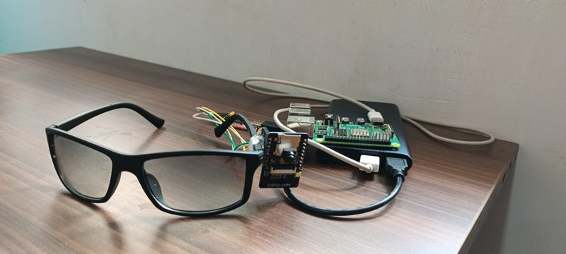

A code review system where separate AI agents check every GitHub pull request for security, code quality and logic issues. A decision agent then approves or blocks the change based on its risk. The flow is a LangGraph state graph with conditional routing, so each pull request only goes through the checks it needs. Long-term memory in a ChromaDB vector store lets reviews learn from past issues. It also suggests patches for common problems and can switch between Gemini, Groq and Hugging Face models.
LangGraph · LangChain · ChromaDB · Gemini · Groq · GitHub API
A question-answering system that gives source-backed answers from PDF, DOCX and text files. It combines meaning-based (vector) search with keyword (BM25) search, and a query classifier routes each question to the best search strategy. Overlapping chunks keep context across page breaks, and every answer records which passages it used, so results can be traced and checked. It's split into ingestion, retrieval and generation layers, with a knowledge base manager and a usage dashboard.
A team of AI agents that turns a text prompt into a consistent video over a minute long. The agents plan scenes, remember characters, use tools and review their own output to fix mistakes, keeping the story consistent at 16 FPS. Several videos render in parallel, with style transfer and audio sync, on zero-downtime cloud infrastructure. Commercial rights and operational access were sold to a media production company.
A matching service that finds compatible profiles from a plain-English description, combining vector search with filters for age, location and preferences. Profiles live in MongoDB and embeddings in ChromaDB, with batch indexing built to handle up to 300k profiles. It runs as a FastAPI service and the whole stack starts with one Docker Compose command.
Started from an automated calling setup on Asterisk and ViciDial and extended it into a voice agent that listens, understands and replies to callers in real time. Speech-to-text, LLM replies and text-to-speech are connected, with call routing and logging so every call can be reviewed. Deployed for live product outreach across different customer groups and demoed end to end.
LLM agents paired with rule-based reasoning to find security holes in web APIs automatically. An agent reads live API details, writes attack tests (SQL injection, XSS, broken access control) and improves them after each failed attempt. It found 34% more vulnerabilities than standard scanners and cut manual testing effort by 70%. Published at IEEE AIRC 2026.
A FastAPI service with REST endpoints to start, stop and monitor WhatsApp and LinkedIn reply bots for each user. Its lead-finding pipeline searches LinkedIn, Google and Twitter, removes duplicates, and scores each lead from 0 to 100, then writes a personalised outreach plan for the best ones.
FastAPI · Node.js · Playwright
An assistant that reads past chats to understand tone, relationship and context, then drafts replies in the user's own style. The WhatsApp integration has chat memory, per-contact behavior, QR login and fallback replies when the AI service is down.
Gemini API · Node.js · Python
A self-driving electric campus vehicle and a VIT-AP initiative. I lead the student team building its perception, lane following and driving decisions. I trained DeepLabV3+ on Mapillary to 67% road-scene segmentation accuracy within the compute of an NVIDIA Jetson, built lane-following and turn-handling control, and trained driving policies in CARLA with SAC, refined with DAgger. The working vehicle was showcased live at VLaunchpad 2025.
ROS · CARLA · DeepLabV3+ · SAC · DAgger · NVIDIA Jetson

Smart glasses that detect obstacles and give spoken directions through Bluetooth earbuds. YOLOv8 is fine-tuned on 50+ custom object classes and optimised to run at 45+ FPS on a Raspberry Pi, with distance and direction estimation from a single camera and location-aware voice alerts. Awardee at the Vikas 2024 Innovation Challenge, showcased at inter-college innovation competitions, and filed for a patent.
YOLOv8 · Raspberry Pi · OpenCV · Roboflow · GCP
A ROS 2 rover that finds and docks with its station on its own, using real-time AprilTag detection and pose estimation. A multi-stage mission controller (state machine) handles approach, alignment and docking. Simulation worlds, rosbag recording and run-to-video tools make missions easy to review and debug.
A CNN video model that detects face-swap deepfakes, with 22% better accuracy and 18% fewer false positives. A synthetic video generator added 40% more variety to the training data. The research, covering deepfake and counterfeit currency detection, was published at IEEE iSAI-NLP 2025. cite →
A pipeline that detects faces with a deep learning detector, turns each face into an embedding, and identifies people with a trained classifier. It works on still images and live video.
Control a computer with hand gestures and spoken commands: voice web search, system monitoring and screen automation. Built for accessibility.
A Python package that converts Android APKs into Play Store app bundles without Android Studio, and handles keystores and signing.
More photos (events, awards, certificates) are in the gallery.